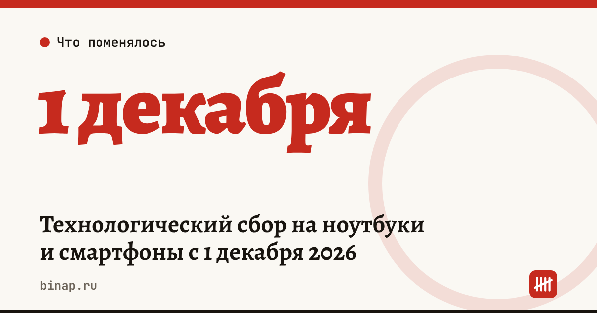

Технологический сбор на ноутбуки и смартфоны с 1 декабря 2026

С 1 декабря 2026 года на ноутбуки и телефоны вводится технологический сбор. Его платят импортёры и производители, но магазин увидит его в закупочной цене.
Ставки пока проект. Минпромторг подготовил проект приказа 21 сентября и выложил на обсуждение 24 сентября, обсуждение закончилось 9 октября. Цифры ещё могут поменяться. Сам сбор сначала хотели ввести с 1 сентября, потом перенесли на 1 декабря.
Ставки по проекту, ₽ за штуку:
| Устройство | Базовая | Марка и модель есть в «Честном знаке» | Сведений нет |
|---|---|---|---|
| Ноутбук (до 10 кг) | 746 | 500 | 992 |
| Смартфон | 373 | 250 | 496 |
| Сотовый телефон (не смартфон) | 75 | 50 | 100 |
| Домашний телефон с беспроводной трубкой | 149 | 100 | 198 |
| Прочие телефонные аппараты | 37 | 25 | 49 |
Ставка зависит от вида устройства, а не от его цены: базу считают от медианной таможенной стоимости такого товара за 2025 год. Если марки и модели нет в справочнике «Честного знака», сбор на треть выше базового, если есть — на треть ниже.
Что ещё известно (по данным Клерка): - позже под сбор могут попасть телевизоры, бытовая техника, серверы и консоли; - максимум по закону — 5 000 ₽ за штуку; - сбор платят до ввода товара в оборот, без оплаты «Честный знак» не выдаст коды; пени не начисляют, долг взыскивает ФНС; - срок маркировки складских остатков могут продлить до 28 февраля 2027 года, но решения пока нет.
Пример (расчёт редакции). Магазин заказал на декабрь 40 смартфонов и 10 ноутбуков, модели есть в справочнике. Сбор поставщика: 40 × 250 + 10 × 500 = 15 000 ₽. Если моделей в справочнике нет — 40 × 496 + 10 × 992 = 29 760 ₽. Эта разница придёт к вам в цене.
Что сделать сейчас: 1. Спросите поставщиков, заложен ли сбор в декабрьские цены и есть ли их модели в справочнике «Честного знака». 2. Проверьте остатки на складе и сроки их маркировки. 3. Если ввозите технику сами — сверьте коды ТН ВЭД с перечнем в проекте, внесите модели в «Честный знак» и зарегистрируйтесь в ГИС промышленности. 4. Пересчитайте прайс и маржу на декабрь.
Частые вопросы
Платит ли сбор розничный магазин? Обычно нет, если покупает у импортёра или производителя: сбор уже в цене.
Почему для одной модели сбор вдвое выше, чем для другой? Если марки и модели нет в справочнике «Честного знака», применяют повышающий коэффициент. Внести модель — задача импортёра.